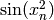
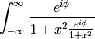

The documentation for Phynx is generated from ReStructured Text using the Sphinx documentation generation tool. Sphinx-0.6.3 or later is required. Sphinx can be obtained through your package manager or by doing:
easy_install sphinx
The documentation sources are found in the doc/ directory in the trunk. The output produced by Sphinx can be configured by editing the conf.py file located in the doc/ directory. To build the users guide in html format, run from the main phynx directory:
python setup.py build_sphinx
and the html will be produced in build/sphinx/html. To build the pdf file, LaTeX (preferably TeX-Live) and dvipng are required. Once these are installed, do:
python setup.py build_sphinx -b latex
cd build/sphinx/latex
make all-pdf
To upload the documentation to the Phynx website:
cd build/sphinx/html
zip -r phynx *
Then visit the Phynx page at the Python Package Index to upload the documentation.
The actual ReStructured Text files are kept in doc/users, doc/devel, doc/api and doc/faq. The main entry point is doc/index.rst, which pulls in the index.rst file for the users guide, developers guide, api reference, and faqs. The documentation suite is built as a single document in order to make the most effective use of cross referencing, we want to make navigating the Phynx documentation as easy as possible.
Additional files can be added to the various guides by including their base file name (the .rst extension is not necessary) in the table of contents. It is also possible to include other documents through the use of an include statement, such as:
.. include:: ../../TODO
The Sphinx website contains plenty of documentation concerning ReST markup and working with Sphinx in general. Here are a few additional things to keep in mind:
Please familiarize yourself with the Sphinx directives for inline markup. Phynx’s documentation makes heavy use of cross-referencing and other semantic markup. For example, when referring to external files, use the :file: directive.
Function arguments and keywords should be referred to using the emphasis role. This will keep Phynx’s documentation consistant with Python’s documentation:
Here is a description of *argument*
Please do not use the default role:
Please do not describe `argument` like this.
nor the literal role:
Please do not describe ``argument`` like this.
Sphinx does not support tables with column- or row-spanning cells for latex output. Such tables can not be used when documenting Phynx.
Mathematical expressions can be rendered as png images in html, and in the usual way by latex. For example:
:math:`\sin(x_n^2)` yields: , and:
.. math::
\int_{-\infty}^{\infty}\frac{e^{i\phi}}{1+x^2\frac{e^{i\phi}}{1+x^2}}
yields:

Interactive IPython sessions can be illustrated in the documentation using the following directive:
.. sourcecode:: ipython
In [69]: lines = plot([1,2,3])
which would yield:
In [69]: lines = plot([1,2,3])
Footnotes [1] can be added using [#]_, followed later by:
.. rubric:: Footnotes
.. [#]
Footnotes
| [1] | For example. |
Use the note and warning directives, sparingly, to draw attention to important comments:
.. note::
Here is a note
yields:
Note
here is a note
also:
Warning
here is a warning
Use the deprecated directive when appropriate:
.. deprecated:: 0.98
This feature is obsolete, use something else.
yields:
Deprecated since version 0.98: This feature is obsolete, use something else.
Use the versionadded and versionchanged directives, which have similar syntax to the deprecated role:
.. versionadded:: 0.98
The transforms have been completely revamped.
New in version 0.98: The transforms have been completely revamped.
Use the seealso directive, for example:
.. seealso::
Using ReST :ref:`emacs-helpers`:
One example
A bit about :ref:`referring-to-phynx-docs`:
One more
yields:
See also
One example
One more
Please keep the Glossary in mind when writing documentation. You can create a references to a term in the glossary with the :term: role.
The autodoc extension will handle index entries for the API, but additional entries in the index need to be explicitly added.
In addition to the aforementioned formatting suggestions:
In the documentation, you may want to include to a document in the Phynx src, e.g. a license file or an example. When you include these files, include them using the literalinclude directive:
.. literalinclude:: ../examples/some_example.py
To maximize internal consistency in section labeling and references, use hyphen separated, descriptive labels for section references, eg:
.. _howto-webapp:
and refer to it using the standard reference syntax:
See :ref:`howto-webapp`
For everything but top level chapters, please use Upper lower for section titles, eg Possible hangups rather than Possible Hangups
There is an emacs mode rst.el which automates many important ReST tasks like building and updateing table-of-contents, and promoting or demoting section headings. Here is the basic .emacs configuration:
(require 'rst)
(setq auto-mode-alist
(append '(("\\.txt$" . rst-mode)
("\\.rst$" . rst-mode)
("\\.rest$" . rst-mode)) auto-mode-alist))
Some helpful functions:
C-c TAB - rst-toc-insert
Insert table of contents at point
C-c C-u - rst-toc-update
Update the table of contents at point
C-c C-l rst-shift-region-left
Shift region to the left
C-c C-r rst-shift-region-right
Shift region to the right